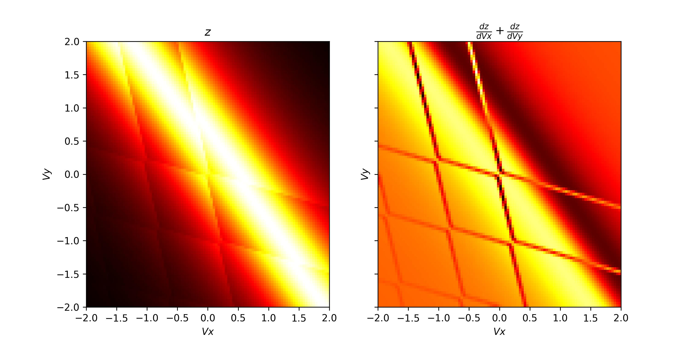
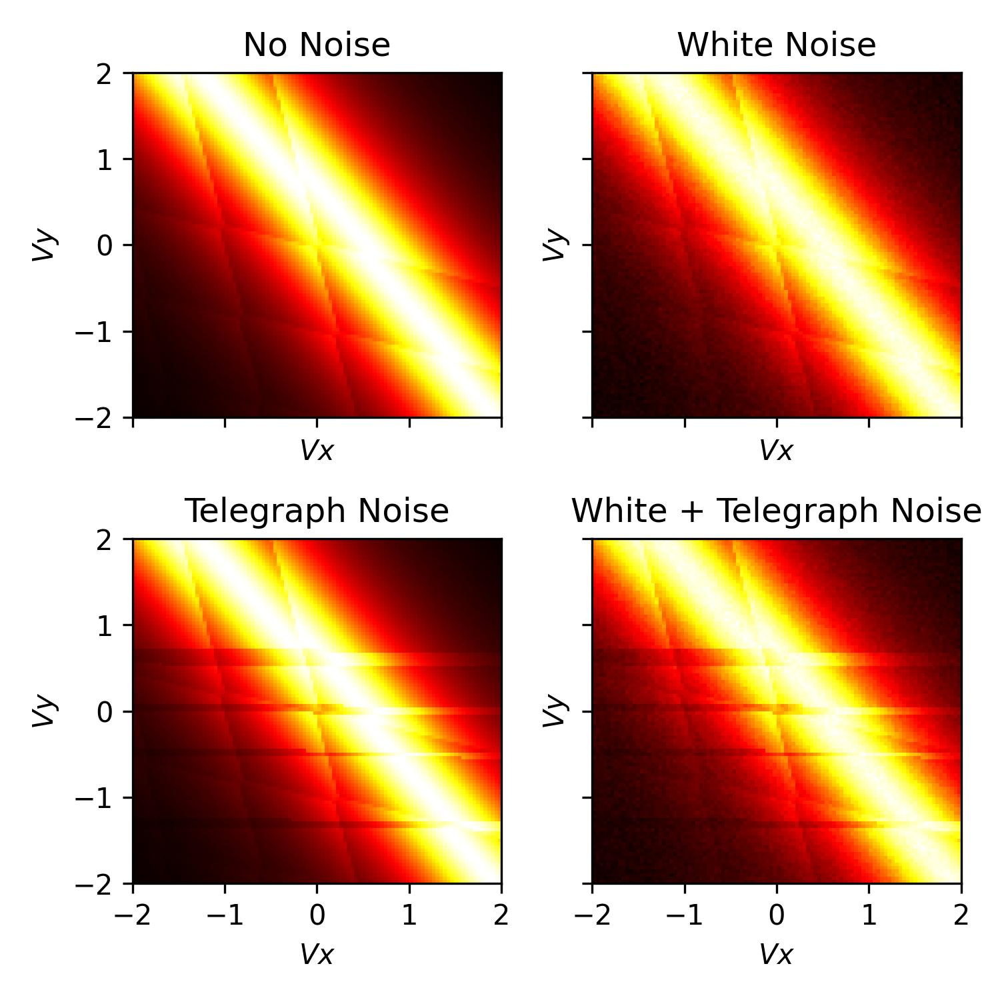
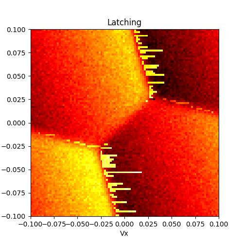

Examples
Here we will provide some examples which show off some of the more advanced functionally provided by Qarray.
Charge sensing
In this example we will simulate the measuring a double quantum dots charge stability diagram through a charge sensor. To do this we will use the ChargeSensedDotArray class to simulate the charge. This class is similar to the DotArray class, but it also includes the charge sensor. Therefore, it is necessary to pass two extra capacitance matrices. One for the coupling between the dots and the sensor (Cds) and one for the coupling between the gates and the sensor (Cgs). In addition, we must specify the width of the Coulomb peak (coulomb_peak_width)
As demonstrated below:
from qarray import ChargeSensedDotArray, GateVoltageComposer
# defining the capacitance matrices
Cdd = [[0., 0.1], [0.1, 0.]] # an (n_dot, n_dot) array of the capacitive coupling between dots
Cgd = [[1., 0.2, 0.05], [0.2, 1., 0.05], ] # an (n_dot, n_gate) array of the capacitive coupling between gates and dots
Cds = [[0.02, 0.01]] # an (n_sensor, n_dot) array of the capacitive coupling between dots and sensors
Cgs = [[0.06, 0.05, 1]] # an (n_sensor, n_gate) array of the capacitive coupling between gates and sensor dots
# creating the model
model = ChargeSensedDotArray(
Cdd=Cdd, Cgd=Cgd, Cds=Cds, Cgs=Cgs,
coulomb_peak_width=0.05, T = 100
)
It is important to note that for the double dot there are now three gates, one for each dot and one for the charge sensor. The index 0 corresponds to the first dot, index 1 to the second dot and index 2 to the charge sensor, when using the GateVoltageComposer, discussed next.
As before, we can use the GateVoltageComposer to create a gate voltage sweep. However, this time we well use an addition piece of functionality, provided by both the DotArray and ChargeSensedDotArray classes, which is the optimal_Vg method. This method returns the optimal gate voltages which minimise the free energy of the passed charge state. For example if we have a charge state of [1., 1., 1.] (two dots one charge sensing dot) the optimal_Vg method will return the gate voltages in the middle of the [1, 1] charge state and directly ontop of the first charge sensing coloumb peak. Whilst if the user passes [0.5, 0.5, 0.5] the method will return the gate voltages in the middle of the [0, 1] - [1,0] interdot charge transition and exactly halfway between two charge sensing coulomb peaks.
voltage_composer = GateVoltageComposer(model.n_gate)
# defining the min and max values for the dot voltage sweep
vx_min, vx_max = -5, 5
vy_min, vy_max = -5, 5
# using the dot voltage composer to create the dot voltage array for the 2d sweep
vg = voltage_composer.do2d(0, vy_min, vx_max, 200, 1, vy_min, vy_max, 200)
# centering the voltage sweep on the [0, 1] - [1, 0] interdot charge transition on the side of a charge sensor coulomb peak
vg += model.optimal_Vg([0.5, 0.5, 0.6])
# calculating the output of the charge sensor and the charge state for each gate voltage
z, n = model.charge_sensor_open(vg)
dz_dV1 = np.gradient(z, axis=0) + np.gradient(z, axis=1)
And now we can plot the output of the charge sensor and its gradient with respect to the gate voltages.
import matplotlib.pyplot as plt
import numpy as np
fig, axes = plt.subplots(1, 2, sharex=True, sharey=True)
# plotting the charge stability diagram
axes[0].imshow(z, extent=[vx_min, vx_max, vy_min, vy_max], origin='lower', aspect='auto', cmap = 'hot')
axes[0].set_xlabel('$Vx$')
axes[0].set_ylabel('$Vy$')
axes[0].set_title('$z$')
# plotting the charge sensor output
axes[1].imshow(dz_dV1, extent=[vx_min, vx_max, vy_min, vy_max], origin='lower', aspect='auto', cmap = 'hot')
axes[1].set_xlabel('$Vx$')
axes[1].set_ylabel('$Vy$')
axes[1].set_title('$\\frac{dz}{dVx} + \\frac{dz}{dVy}$')
plt.show()
The output of the code above is shown below:

Whilst this plot looks closer to what we see experimentally it is still too perfect. Where is the noise?
Noise
To add noise to the simulation we can import some of noise classes provided by Qarray.
In the example below we will demonstrate two of our noise models, WhiteNoise and TelegraphNoise.
The WhiteNoise class adds white noise to the simulation, of a particular amplitude (std). The TelegraphNoise simulates a charge trap randomly switching near the charge sensor. The probabilities of the trap switching between the two states are given by p01 and p10. The amplitude of the noise is given by amplitude.
In addition, all our noise models overload the + operator, so we can combine them to create more complex noise models.
from qarray.noise_models import WhiteNoise, TelegraphNoise, NoNoise
# defining a white noise model with an amplitude of 1e-2
white_noise = WhiteNoise(amplitude=1e-2)
# defining a telegraph noise model with p01 = 5e-4, p10 = 5e-3 and an amplitude of 1e-2
random_telegraph_noise = TelegraphNoise(p01=5e-4, p10=5e-3, amplitude=1e-2)
# combining the white and telegraph noise models
combined_noise = white_noise + random_telegraph_noise
# defining the noise models
noise_models = [
NoNoise(), # no noise
white_noise, # white noise
random_telegraph_noise, # telegraph noise
combined_noise, # white + telegraph noise
]
# plotting
fig, axes = plt.subplots(2, 2, sharex=True, sharey=True)
fig.set_size_inches(5, 5)
for ax, noise_model in zip(axes.flatten(), noise_models):
model.noise_model = noise_model
# fixing the seed so subsequent runs are yield identical noise
np.random.seed(0)
z, n = model.charge_sensor_open(vg)
ax.imshow(z, extent=[vx_min, vx_max, vy_min, vy_max], origin='lower', aspect='auto', cmap='hot')
ax.set_xlabel('$Vx$')
ax.set_ylabel('$Vy$')
axes[0, 0].set_title('No Noise')
axes[0, 1].set_title('White Noise')
axes[1, 0].set_title('Telegraph Noise')
axes[1, 1].set_title('White + Telegraph Noise')
plt.tight_layout()

Latching
Within Qarray we provide two latching models, LatchingModel and PSBLatchingModel. The LatchingModel simulates latching on the transitions to the leads and inter-dot transitions, due to slow tunnel rates. The PSBLatchingModel simulates latching only when the moving from (1, 1) to (0, 2) as indicative of PSB. So there is directionality based on which direction the transition is crossed. In the below we will demonstrate the use of the LatchingModel with the ChargeSensedDotArray class.
Firstly we do the necessary imports, define the capacitance matrices. Then we define the latching model and the charge sensed dot array model. The latching model class takes three arguments:
The number of dots.
A vector, p_leads, encoding information about the tunnel rate to the leads. Such that if the (N, M) -> (N + 1, M) charge transition is crossed p_leads[0] is the probability that the dot’s charge configuration will change from (N, M) to (N + 1, M) in the next pixel of the charge stability diagram. In our case we set both proboabilities to 0.25.
A matrix, p_inter, encoding information about the tunnel rate between dots. Such that if the (N, M) -> (N - 1, M + 1) charge transition is crossed p_inter[0][1] is the probability that the dot’s charge configuration will change from (N, M) to (N - 1, M + 1) in the next pixel of the charge stability diagram. As such the digaonal elements of the matrix are not used. In our case we set the off diagonals to 1, meaning no latching will occur on the interdot transition. The code to do this is shown below:
"""
An example demonstrating the use of the latching models
"""
from matplotlib import pyplot as plt
from qarray import ChargeSensedDotArray, GateVoltageComposer, WhiteNoise, LatchingModel
# defining the capacitance matrices
Cdd = [[0., 0.1], [0.1, 0.]] # an (n_dot, n_dot) array of the capacitive coupling between dots
Cgd = [[1., 0.2, 0.05], [0.2, 1., 0.05], ] # an (n_dot, n_gate) array of the capacitive coupling between gates and dots
Cds = [[0.02, 0.01]] # an (n_sensor, n_dot) array of the capacitive coupling between dots and sensors
Cgs = [[0.06, 0.02, 1]] # an (n_sensor, n_gate) array of the capacitive coupling between gates and sensor dots
# a latching model which simulates latching on the transitions to the leads and inter-dot transitions
latching_model = LatchingModel(
n_dots=2,
p_leads=[0.25, 0.25],
p_inter=[
[0., 1.],
[1., 0.],
]
)
# # a latching model which simulates latching only when the moving from (1, 1) to (0, 2) as indicative of PSB
# latching_model = PSBLatchingModel(
# n_dots=2,
# p_psb=0.2
# # probability of the a charge transition from (1, 1) to (0, 2) when the (0, 2) is lower in energy per pixel
# )
# creating the model
model = ChargeSensedDotArray(
Cdd=Cdd, Cgd=Cgd, Cds=Cds, Cgs=Cgs,
coulomb_peak_width=0.05, T=5,
algorithm='default',
implementation='rust',
noise_model=WhiteNoise(amplitude=1e-3),
latching_model=latching_model,
)
Included by commented out is the code to use the PSBLatchingModel instead. THis model only has one parameter, the probability of latching when moving from (1, 1) to (0, 2) as indicative of PSB.
We then use the GateVoltageComposer to create a gate voltage sweep and the optimal_Vg method to find the optimal gate voltages. in the same way as before. We plot the output of the charge sensor, which is shown below.
# creating the voltage composer
voltage_composer = GateVoltageComposer(n_gate=model.n_gate)
# defining the min and max values for the dot voltage sweep
vx_min, vx_max = -0.1, 0.1
vy_min, vy_max = -0.1, 0.1
# using the dot voltage composer to create the dot voltage array for the 2d sweep
vg = voltage_composer.do2d(0, vy_min, vx_max, 100, 1, vy_min, vy_max, 100)
vg += model.optimal_Vg([0.5, 1.5, 0.7])
# creating the figure and axes
z, n = model.charge_sensor_open(vg)
plt.imshow(z, extent=[vx_min, vx_max, vy_min, vy_max], origin='lower', aspect='auto', cmap='hot')
plt.xlabel('Vx')
plt.ylabel('Vy')
plt.title('Latching')
plt.show()
